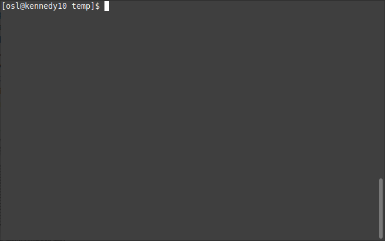
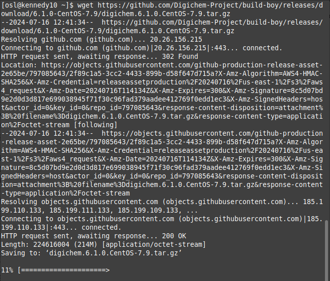
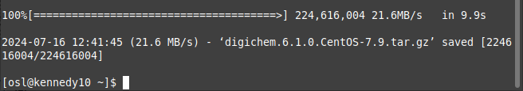
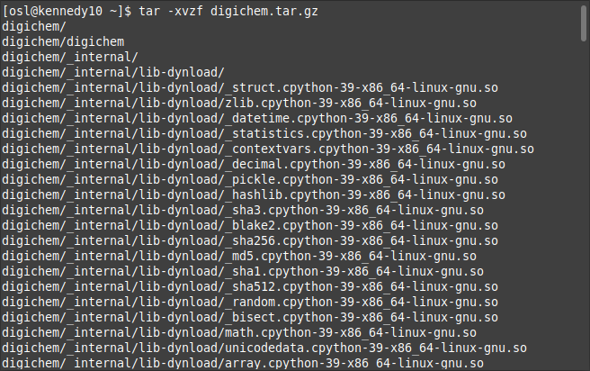
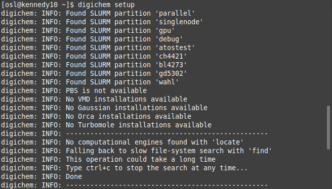

How to install
Digichem is really easy to install. You don’t need any prior experience working with the command-line, installing python packages or anything like that. Just follow the step-by-step instructions below, copy and pasting the commands where necessary. Digichem will take care of the rest.
Note
These instructions will install Digichem for the current user only. If you are a server administrator and want to install Digichem for multiple users, refer to the full installation instructions.
1. Log in
Start by logging in to your computational server as normal. There are a few different programs you can use to do this, we recommend using whichever program you are comfortable with.
On Linux and Mac OS, you will probably use the ssh command directly from the terminal. On Windows, popular programs
include PuTTy and MobaXterm, but you are of course welcome to use whatever you like.
Once you have logged in to your server, you should be greeted with a blank terminal:
2. Download
Copy and paste the following command to download the latest version of Digichem:
$ wget https://github.com/Digichem-Project/build-boy/releases/download/7.0.1-CentOS-Stream-8/digichem.7.0.1.CentOS-Stream-8-blender.tar.gz -O digichem.tar.gz
After pressing ‘enter’, the download will print a lot of information to the terminal. At the bottom there will be a progress bar to track the download:
Once it reaches 100%, the download will be complete!
3. Extract
Copy and paste the following command to unpack the archive you just downloaded:
$ tar -xvzf digichem.tar.gz
After pressing ‘enter’, the terminal will agin fill with information as the archive is unpacked:
4. Install
Next, copy and paste the following command to install Digichem.
$ digichem/_internal/install.sh
This command should only take a few seconds as Digichem installs the necessary file links.
Once the process is complete, Digichem will say “Installation complete.”:
5. Setup
Finally, copy and paste the following command to setup your new installation.
$ digichem setup
This will tell Digichem to search your server for available computational engines (Gaussian, Orca, Turbomole etc.) and server queues (SLURM, PBS etc.) This may take a few minutes if your server is busy. As Digichem searches, it will print what it finds to the terminal window to keep you updated:
Once the process is complete, you are ready to begin submitting calculations!